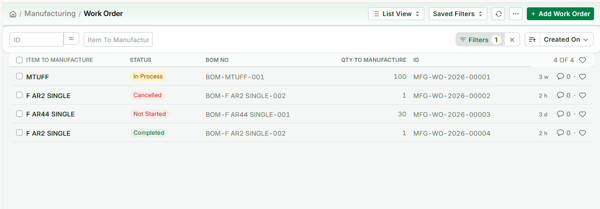
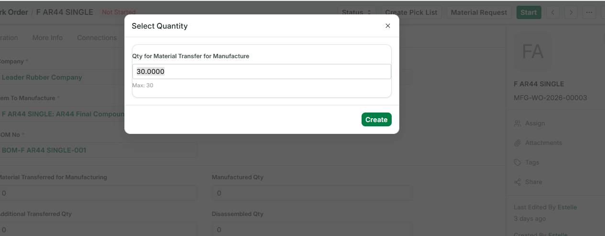
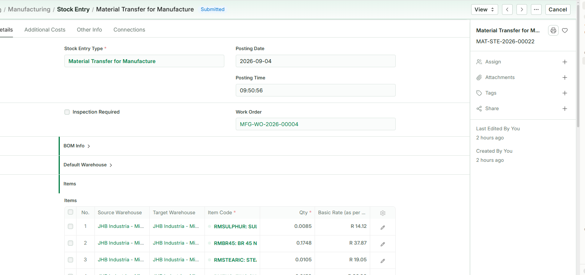
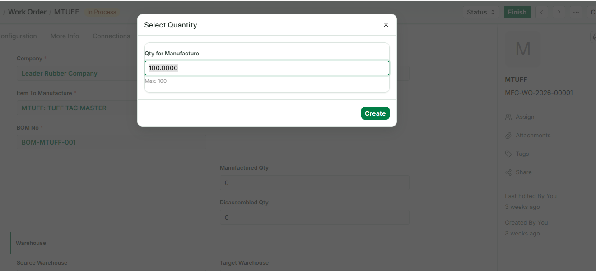
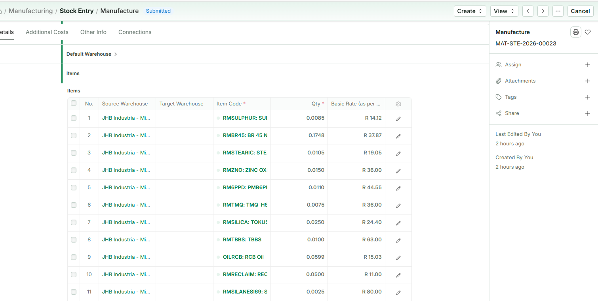
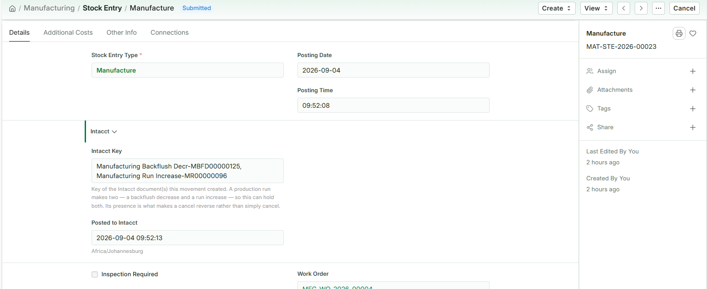
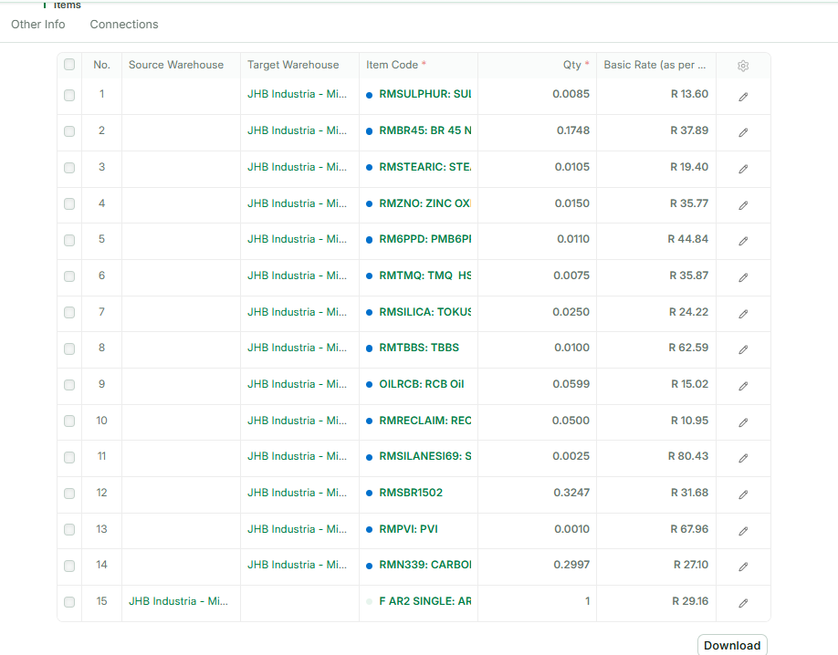
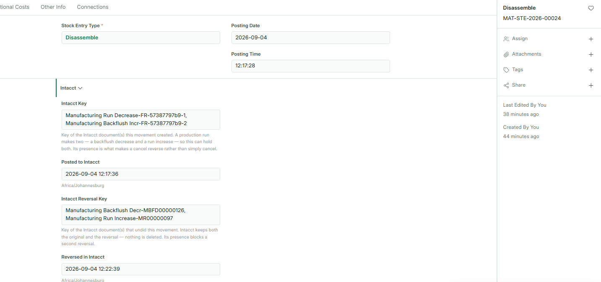

This guide covers recording production against a works order. Raising one in the first place is a separate job, covered in Creating a Works Order.
Before you start
What you are doing
Recording production does two things at once. The components are consumed, and the finished goods are created. Both happen together, and both reach Sage Intacct as a single operation — so you can never end up with components used and nothing to show for them.
Where the recipe comes from
Every works order points at a BOM — the recipe. BOMs come from Sage Intacct as kits. You never type a recipe in Fuse and you cannot change one here.
Fuse works out the component quantities from the recipe and the amount you are making. Your job is to confirm what was actually used and correct anything that differed.
Before you record anything
- Know how much you actually made, not how much you intended to make.
- Know whether anything was substituted, added, or used in a different quantity.
- Know which warehouse the components came from — the store, or a work-in-progress warehouse if they were issued to the floor first.
Finding the works order
- On Fuse Home, click Works Orders.
- A list opens showing the open orders: the item being made, the status, the BOM, the quantity ordered and the order number.
- Click the row you are recording against.

Status Not Started means the order has been raised but no material has been issued to it yet. In Process means it is open and can be produced against. A completed order drops off the default list.
Starting the order — issuing the material
Do this when the batch is about to run. It records that the components have been given to the job.
Step 1 — Start
- With the works order open, click Start at the top right.
- A Select Quantity box appears, asking the quantity for material transfer.
- Leave it at the full order quantity unless you are only starting part of it.
- Click Create.

Step 2 — The material entry
A Material Transfer for Manufacture entry opens, already filled in from the recipe. Click Save, read the rows, then Submit.
The works order now shows Material Transferred for Manufacturing, and the status turns to In Process.

Why nothing appears in Intacct at this step Here, components are made in the same warehouse they are stored in — the source, the work-in-progress and the target warehouse on the works order are all the same place. So nothing has actually moved, and there is nothing for Intacct to record. The entry is a Fuse record that the material is now committed to the job. Intacct hears about the production run itself, at the next step.
On a site that issues components to a separate work-in-progress warehouse, this step is a real movement and does reach Intacct as a transfer.
Recording production
Do this when the batch is finished and you know how much you actually made.
Step 1 — Finish
- With the works order open, click Finish at the top right.
- A Select Quantity box appears, showing the quantity for manufacture and the maximum you may record.
- Type how much you actually made. It can be less than the full order.
- Click Create.
Leave Consider Process Loss alone unless your supervisor has told you otherwise.

Step 2 — The Manufacture entry
A Manufacture entry opens, already filled in. This document did not exist until you clicked Finish — it is created by it. The works order number is carried across, and every component from the recipe has been worked out for the quantity you entered.
The last row in the list is the finished goods going in. The rows above it are the components coming out.
It is a draft. Nothing has moved yet, in Fuse or in Intacct.

Step 3 — Changing the recipe for this run
This is the part that matters, and the part a new operator most often rushes. What Fuse has filled in is what the recipe says should have been used. What you record should be what actually was.
You can change three things, and all of them apply to this run only.
Change a quantity
A component went over or under. Change the Qty on that row to what was really used.
Substitute one item for another
You ran short of something and used a different material. Change the Item Code on that row to what was really used, and set the quantity.
Fuse records the substitute, not the original. That is deliberate, and it is why adjustable recipes work.
Add a row
Something went in that the recipe does not have at all. Click Add Row, choose the item, enter the quantity, and set the source warehouse to wherever it came from.
Remove a row
A component was not used. Either set its quantity to zero or delete the row. Both have the same effect: it is not consumed and it is not sent to Intacct.
What this does NOT change The master BOM is untouched. The recipe in Intacct is untouched. The next works order for this item starts from the original recipe again, exactly as before. Nothing you do on this screen changes what anyone else will see tomorrow.
Why the honesty matters
The cost of the finished goods is worked out from the cost of what was actually consumed. Record what really went in and the finished cost is right. Accept the recipe when it was not followed, and the cost is wrong from that point onwards — and nobody downstream has any way of knowing.
Step 4 — Save, check, submit
- Click Save. The entry is still a draft. Nothing has moved.
- Read the lines once more.
- Click Submit, and confirm.
Two records go to Intacct together: the components consumed, and the finished goods produced. They are sent as one operation, so a half-recorded production run is not possible.
Producing in stages
You do not have to record a whole order at once.
If the order is for 100 kg and you made 40 kg today, record 40. The works order will show 40 made and 60 still to go. Tomorrow you record the rest, and each part reaches Intacct as it happens.
This is the normal way to work when a batch runs over more than one shift or day. There is no need to wait until an order is complete.
Checking it worked
- Go to Fuse Home and click Stock Control.
- Under Reports, open Stock Balance.
- Check the finished item has gone up by what you made, and a component or two have gone down.
- Open the works order again — Manufactured Qty should now show what you recorded.
Checking it reached Intacct
Open the submitted Manufacture entry and expand the Intacct section. It shows two keys, because a production run makes two documents in Intacct:
- a Manufacturing Backflush Decr — the components coming out
- a Manufacturing Run Increase — the finished goods going in, carrying the cost
Both keys and the time they were sent are held against the entry, so either Intacct document can be found from here. If the section is empty, the movement did not reach Intacct — tell your administrator.

Un-manufacturing
Un-manufacturing takes a finished item off the shelf and breaks it back into the components it is made of. The item goes out of stock, and the components come back in.
It is a transaction in its own right, not the undo of anything. The item might have been made last week or last year, by a works order nobody can find, or before Fuse existed. None of that matters and none of it is asked for.
Not the same as cancelling a run Cancelling a Manufacture entry undoes one specific production run and puts the works order back where it was. Un-manufacturing is a fresh transaction against stock on hand. If you are correcting a run you have just recorded, cancel it — see Cancel, never delete. If you are breaking up stock, un-manufacture it.
Where the components come from
From the BOM — the same recipe the item is made by. You choose the item's BOM and the quantity being broken up, and Fuse works out the components and quantities from it, the same way it works them out for a production run.
If you happen to know which works order the item came from you can record it, but it is optional and it changes nothing.
What you are doing
- On Fuse Home, click Stock Control, then Stock Entry, and add a new one.
- Set Stock Entry Type to Disassemble.
- Open BOM Info and tick From BOM.
- Under Default Warehouse, set the Default Target Warehouse — where the components are going. Every component row picks it up.
- Choose the BOM of the item you are breaking up, and enter the Finished Good Quantity — how many you are taking apart.
- Click Get Items. The components are listed coming in, and the last row is the item itself, going out.
- On that last row, set the Source Warehouse — where the item is being taken from. It is the one warehouse the screen does not fill in for you, and the entry cannot be submitted without it.
- Click Update Rate and Availability. Until you do, every rate reads R 0.00.

Correcting what actually came back
What the BOM says the item contains and what you actually recover are not always the same — something may be damaged, contaminated, or not worth keeping.
Change it the same way you would on a production run, and it applies to this entry only:
- Change a quantity if less came back than the recipe says.
- Remove a row — set it to zero or delete it — if a component was not recovered at all.
- Add a row if something came out that the recipe does not list.
The master BOM is untouched.
Save and submit
- Click Save. It is a draft; nothing has moved.
- Read the rows once more.
- Click Submit, and confirm.
Both halves reach Intacct as one operation, so a half-broken-up item is not possible.
What reaches Intacct
Two documents, the same pair a cancelled production run uses, because Intacct models it the same way:
- Manufacturing Run Decrease — the item leaves stock. No cost is sent; Intacct values what leaves at its own costing.
- Manufacturing Backflush Incr — the components come back in, carrying a cost.
The cost on that second leg is ERPNext's rate for each component on the entry — the item's own value broken back across the parts it yielded. There is no original run to read a cost from, and that is the point: un-manufacturing does not need one.
Why a zero cost is refused The components-in definition updates cost in Intacct. Sending zero would overwrite the component's real valuation with nothing. If a row has no rate, Fuse refuses the whole entry and names the row rather than posting a destructive number.

Undoing an un-manufacture
Cancel the Disassemble entry. The components go back out and the item comes back in, at the cost of the components — which is a production run, and posts through the ordinary manufacturing pair.
As everywhere else in Fuse: cancel, never delete, and never key an opposite entry by hand.
If something goes wrong
| What you see | What it means and what to do |
|---|---|
| Negative stock / not enough quantity | A component is not available in the source warehouse in the quantity shown. Check the warehouse is right — if the components were issued to the floor, they are in a work-in-progress warehouse, not the store. |
| Quantity must be positive | A row has zero or a blank quantity. Enter it, or remove the row. |
| This entry produces more than one finished item | Only one finished item per entry. Record the other on its own entry. |
| A component is produced but is not the finished item | A row has a destination but no source. Scrap and by-products are not handled yet — speak to your supervisor. |
| No Intacct definition is mapped | Fuse does not know which Intacct document to create. An administrator sets this under Transactions in Intacct Settings. |
| Intacct rejected the request | Nothing has been recorded anywhere. Read the reason; if you cannot fix it, send it to your administrator. |
Two rules that apply to everything in Fuse
Saving is not submitting
Saving stores a draft. A draft changes no stock at all, in Fuse or in Sage Intacct, and you can edit it, leave it, or delete it freely. Nothing has happened yet.
Submitting is the moment it becomes real. Fuse sends the movement to Intacct, and only once Intacct has accepted it does Fuse record it here. Read your work between the two.
Cancel, never delete
If you get something wrong after submitting, open the document and choose Cancel. Fuse reverses the movement in Intacct first, then cancels it here, so both systems return to where they were.
Do not delete, and do not try to correct a mistake by entering a second, opposite movement. Deleting would remove the record here while Intacct still holds the movement, and an opposite entry leaves two wrong movements in the history instead of none.
Cancelling a production run reverses both halves in Intacct. That is un-manufacturing, and it has its own section above.
Jobs that belong in Intacct
| If you try to | What happens |
|---|---|
| Create or change a BOM | Refused. Recipes are Intacct kits and are changed there. |
| Adjust stock up or down | Refused. On-hand corrections are made through a Cycle Count in Intacct. |
| Change an item, warehouse or supplier | Read-only here. These come from Intacct, and a change made in Fuse would be overwritten at the next sync. |
Quick reference
Fuse Home → Works Orders → open the order → Start → quantity → Create → Save → Submit → Finish → quantity → Create → correct the components → Save → Submit.
| Question | Answer |
|---|---|
| Can I record part of an order? | Yes. Record what you made; the rest stays open. |
| Can I change a component's quantity? | Yes. |
| Can I swap a component for a different item? | Yes. Change the Item Code on that row. |
| Can I add a component that is not in the recipe? | Yes. Add Row. |
| Can I remove a component? | Yes. Set it to zero or delete the row. |
| Does any of that change the BOM? | No. This run only. |
| Do I work out the quantities? | No. Fuse takes them from the recipe. You correct them. |
| Do I enter a cost? | No. It is worked out from the components consumed. |
| Two finished items on one entry? | No. One each. |
| How do I undo a run I just recorded? | Cancel the Manufacture entry. Both halves are reversed. |
| How do I break up stock made long ago? | Un-manufacture it — a Disassemble entry built from the BOM. |
| Do I need the works order it came from? | No. Record it if you know it; it changes nothing. |
| Where do the components come from? | The item's BOM, for the quantity you are breaking up. |
Where this goes. Fuse and Sage Intacct hold the same stock. Anything you submit here is sent to Intacct immediately, and Fuse only records it once Intacct has accepted it. If Intacct refuses, nothing is saved in either system and you will see the reason on screen.